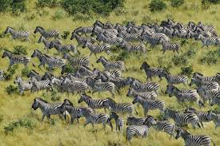
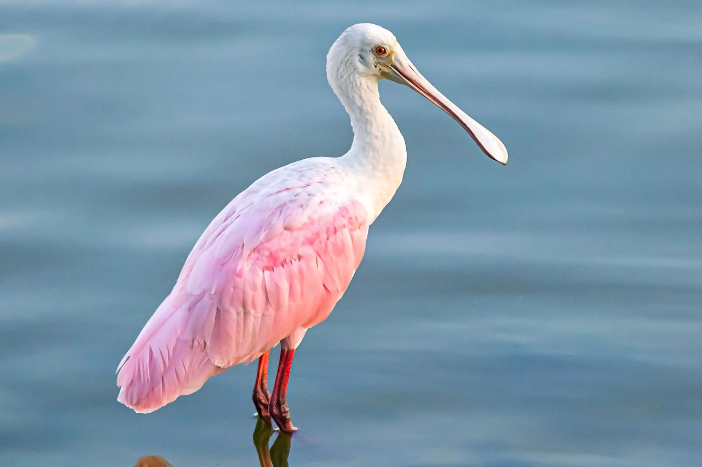
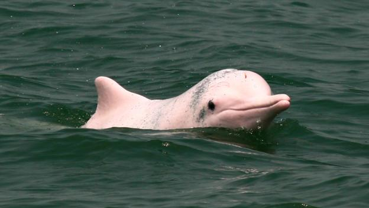
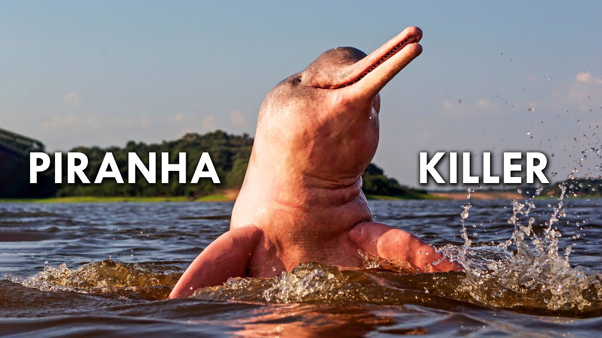

Pink Dolphin
Pink Bird
Pink Zebra
Zebras migrate to Botswana, the Makgadikgadi, and the Serengeti National Park. They travel in the rainy seasons and go around 2,900 miles, occupying many geographical areas.
Zebras face many challenges on their journey of migration: 1. Predators: - Hyenas - Cheetahs - Leopards - Crocodiles 2. Lack of water 3. Navigating obstacles such as human activities
Pale pink, medium sized bird with an oval shaped body and long legs. The end of their bill flattens into a spoon-like shape, and their neck usually rests in an “S” shape. Roseate Spoonbills are usually found in the Southeastern coast of the US or around Mexico and Central to South America. Most spoonbills migrate short distances often due to changes in food and water levels.
The Rosate Spoonbill faces many challenges on thier jounrey of migration: 1. Habitat Loss 2. Climate change 3. Predation
During the dry season the dolphins occupy the main river channels in the Amazon. During the rainy season, they move to smaller tributaries to the forest, and to floodplains.
Challenges faced during migration: Habitat loss Pollution Entanglement in fishing gear Human activities Pollution/Litter in the ocean
Fun Fact: Some of the fish species that are commonly consumed by pink river dolphins include piranhas (yikes!), catfish, characins, and tetras.